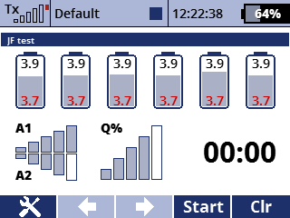

This app works with a MULi6S LiPo battery sensor to show the voltages of up to six battery cells on a telemetry screen together with signal strength, telemetry reception and a timer.
You can download the source code from the SoarJETI GitHub repository.